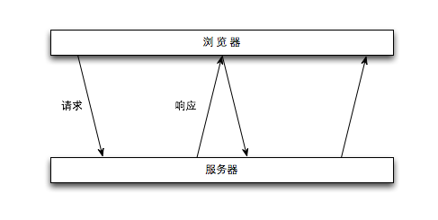
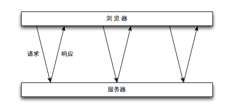

2005年，Jesse James Garrett发表了《Ajax: A new Approach to Web Applications》。Ajax，是Asynchronous JavaScript + XML的缩写，通过向服务器请求额外的数据而无须卸载页面，以带来更好的用户体验。
Ajax技术的核心是XMLHttpRequest对象，IE5中第一次引入。1999年，微软发明了作为ActiveX对象的XMLHttpRequest，随后不久，同行竞相模仿，现在几乎所有的浏览器都支持了这个对象。
IE7是微软浏览器中第一个提供准原生XMLHttpRequest对象的，同时也提供了ActiveX对象，这两个对象都可以被用户或者系统管理员禁用，创建请求的时候需要注意这一点。注意：IE7中的“原生”版本对象不能创建本地文件请求，此时使用ActiveX对象更为可靠。
XMLHttpRequest对象不同的ProgID对应不同的MSXML版本，如下所示。
前三个ProgID在大部分设置中都是指向同一个对象：MSXML2.XMLHTTP.3.0；有些客户机可能同时安装了MSXML2.XMLHTTP.6.0和MSXML2.XMLHTTP.3.0（与IE6共存）。这意味着MSXML2.XMLHTTP.6.0和Microsoft.XMLHTTP中的任何一个都足以获取最新的可用对象。为了让事情简单化，只使用Microsoft.XMLHTTP即可，因为为了保持向后兼容，与IE6共存的MSXML2.XMLHTTP.3.0就是Microsoft.XMLHTTP的别名。
注：上述文字从《测试驱动的JavaScript开发》P195~P196总结。
var createXHR = (function(){
var versions = ['MSXML2.XMLHttp.6.0', 'MSXML2.XMLHttp.3.0', 'MSXML2.XMLHttp'],
version,
i,
len;
if (typeof XMLHttpRequest !== 'undefined') {
return function () {
return new XMLHttpRequest();
};
} else if (typeof ActiveXObject !== 'undefined') {
// 适用于IE7之前的版本，没有考虑上面提到的IE7的情况
for (i = 0, len = versions.length; i < len; i += 1) {
try {
new ActiveXObject(versions[i]);
version = versions[i];
break;
} catch (ex) {
// 不处理
}
}
}
if (version) {
return function () {
return new ActiveXObject(version);
};
} else {
throw new Error('No XHR object available.');
}
}());
所有浏览器中对XHR对象的实现与IE最早的实现相兼容
使用XHR对象时，最常调用是open，send，abort3个方法和onreadystatechange1个事件处理程序。
open方法接受3个参数：要发送请求的类型（“GET”、“POST”等）、请求的URL（同源限制）和表示是否异步发送请求的布尔值。调用此方法后，不会真正分派请求，只是启动一个请求以备发送。
send方法接受1个参数：要作为请求主体发送的数据。如果不需要通过请求主体发送数据，则必须传入null，因为这个参数对有些浏览器来说是必须的。调用请求之后，请求会被分派到服务器。
如果是同步请求，JavaScript会等到服务器响应之后再继续执行；如果是异步请求，JavaScript继续执行而不必等待响应。可以监听readystatechange事件以检测XHR对象的readyState属性的变化。
必须在调用open之前绑定onreadystatechange事件处理程序才能保证跨浏览器的兼容性。readyState属性表示请求/响应过程中的活动阶段：
在收到响应后，响应的数据会自动填充XHR对象的属性，相关的属性介绍如下：
一般来说，可以将HTTP状态码200作为成功的标识。
对于异步请求，在接收到响应之前可以调用abort方法来取消请求。调用这个方法后，XHR对象会停止触发事件，也不再允许访问任何跟响应相关的对象属性。在终止请求后，应该解除XHR对象的引用。由于内存原因，不建议重用XHR对象。
var xhr = createXHR();
xhr.onreadystatechange = function () {
if (xhr.readyState === 4) {
if (xhr.status >= 200 && xhr.status < 300 || xhr.status === 304) {
// 处理响应
} else {
// 请求失败
}
}
};
xhr.open('GET', 'example.php', true);
xhr.send(null);
xhr.abort();
xhr = null;
有的浏览器会错误的报告204状态码。IE中XHR的Active版本会将204设置为1223，而IE中原生的XHR会将204规范化为200。Opera会在取得204时报告status的值为0。
在事件处理程序内部，必须使用变量名，ActiveX控件为了预防安全问题，不允许使用this对象。
每个HTTP请求和响应会带有相应的头部信息。XHR跟头部信息操作相关的方法有setRequestHeader和getResponseHeader、getAllResponseHeaders三个。
默认情况下，发送HTTP请求是，还会发送下列头部信息：
setRequestHeader方法接收两个参数：头部字段名和头部字段值。必须在open之后，send之前调用。
建议使用自定义的头部字段名称，不要使用浏览器正常发送的字段名称，否则有可能会影响浏览器响应。有的浏览器允许JavaScript重写头部信息，有的不允许。
调用getResponseHeader并传入头部字段名称，可以取得响应的头部响应信息；调用getAllResponseHeaders取得包含所有头部信息的多行文本。
Date: Tue, 23 Jul 2013 14:58:54 GMT
Server: Apache/2.2.22 (Unix) DAV/2 PHP/5.3.15 with Suhosin-Patch mod_ssl/2.2.22 OpenSSL/0.9.8x
Connection: Keep-Alive
X-Powered-By: PHP/5.3.15
Transfer-Encoding: chunked
Keep-Alive: timeout=5, max=100
Content-Type: text/html
GET请求是最常见的请求类型，常用于向服务器查询信息，查询字符串参数追加到URL的末尾以将信息发送到服务器，查询字符串必须经过encodeURIComponent编码。
function addURLParam(url, name, value) {
if (!url || typeof url !== 'string') {
throw new Error('URL Error!');
}
if (url[url.length - 1] !== '?') {
url += ~url.indexOf('?') ? '&' : '?';
}
url += encodeURIComponent(name) + '=' + encodeURIComponent(value);
return url;
}
POST请求用于向服务器发送应该被保存的数据，数据作为请求的主体提交，数据格式不限，可以直接XML DOM文档对象，XHR会将文档序列化后提交到服务器。
默认情况下，服务器对POST请求和提交表单请求会区别处理，服务器端需要自定义对原始数据进行解析。可以通过下列步骤模仿表单提交：1、将Content-Type头部信息设置为表单提交内容类型application/x-www-form-urlencoded；2、把数据格式化为查询字符串的格式。
XMLHttpRequest 2级进一步发展了XHR。并非所有的浏览器都实现了XMLHttpRequest 2规范，但大多数浏览器都实现了其部分内容。
现代Web应用中频繁使用的一项功能就是表单数据的序列化，XMLHttpRequest 2规范为此定义了FormData类型，用以序列化表单或创建与表单格式相同的数据。
var data = new FormData();
data.append('name', 'value');
xhr.send(data);
// 或
var form = document.forms[0];
var data = new FormData(form);
xhr.send(data);
append方法接收两个参数：键和值，分别对应表单字段名字和字段中包含的值。
IE8为XHR对象添加了一个timeout属性，表示请求超时时间（单位毫秒），触发超时事件，并调用ontimeout事件处理程序。
超时终止请求时，会调用ontimeout事件处理程序，如果此时readyState可能已经变成4，会调用onreadystatechange事件处理程序，但此时访问status属性，会导致错误，为避免报错，可以将status属性的访问包装在try-catch中。
xhr.timeout = 1000;
xhr.ontimeout = function () {
alert('Request timeout');
};
overrideMimeType方法用于重写XHR响应的MIME类型，以改变客户端对响应数据的处理方式。
var xhr = createXHR();
xhr.open('GET', 'example.php', true);
xhr.overrideMimeType('text/xml');
xhr.send(null);
调用overrideMimeType必须在send方法之前，才能保证重写响应的MIME类型。
Progress Events规范是W3C的一个工作草案，定义了客户端与服务器通信有关的事件。
Progress Events规范定义了以下6个进度事件：
每个请求都以loadstart事件开始，接下来是若干个progress事件，然后触发error、abort或load事件之一，最后以触发loadend事件结束。
为了简化异步交互模型，Firefox引入了load事件，用以代替onreadystatechange事件。响应接收完毕后将触发load事件，因此也就没有必要检查readyState属性了，但还需要检查status属性。onload事件处理程序会接收到一个event对象，其target属性就指向XHR对象实例（存在兼容性问题）。
Progress事件会在浏览器接收新数据期间周期性的触发。onprogress事件处理程序会接收一个event对象，其target属性是XHR对象。event对象还包含3个特殊的属性：lengthComputable、position和totalSize。其中lengthComputable是表示进度信息是否可用的bool值；position表示已经接收的字节数，totalSize表示根据Content-Length响应头部确定的预期字节数。
通过XHR通信的最大限制就是跨域安全策略，默认情况下，XHR对象只能访问与包含它的页面位于同一个域中的资源。
CORS（Cross-Origin Resource Sharing，跨域资源共享）是W3C的一个工作草案，定义了跨域访问资源时，浏览器与服务器应该如何通信。
CORS的基本思想是让浏览器通过自定义的HTTP头部（例如Origin包含请求页面的源信息，协议、域名和端口号）与服务器沟通，服务器根据这个头部信息决定是否给予响应，如果服务器认为这个请求可以接受，就在Access-Control-Allow-Origin头部中发回相同的源信息（如果是公共资源，可以回发*），如果没有这个头部信息，或者这个头部信息不匹配，浏览器就会驳回请求。需要注意的是，请求和响应都不包含Cookie信息。
微软在IE8中引入了XDR（XDomainRequest）类型。这个对象与XHR类似，实现了部分CORS规范，可以进行安全的跨域通信。
以下是XDR与XHR的一些不同之处：
var xdr = new XDomainRequest();
xdr.onload = function () {
alert(xdr.responseText);
};
xdr.onerror = function () {
alert('error occurred');
};
xdr.timeout = 1000;
xdr.ontimeout = function () {
alert('request timeout');
};
xdr.open('POST', 'http://qingling.duapp.com/');
xdr.contentType = 'application/x-www-form-urlencoded';
xdr.send('name1=value1&name2=value2');
xdr.abort();
Firefox3.5+和其他非IE浏览器通过XMLHttpRequest对象实现了对CORS的原生支持，只需在open方法中传入绝对URL即可。
与IE中的XDR对象不同，通过跨域XHR对象可以访问status和statusText属性，还可以支持同步请求。但为了安全，跨域XHR对象有下列限制：
访问本地资源使用相对URL，访问跨域资源使用绝对URL，以消除歧义。
CORS通过使用一种叫做Preflighted Request的透明服务器验证机制支持开发人员使用自定义的头部、GET或POST之外的方法，以及不同类型的主体内容。
Preflight请求使用OPTIONS方法，发送下列头部：
服务器通过在响应中发送如下头部进行响应：
默认情况下，跨域请求不提供凭据（Cookie、HTTP认证以及SSL证明等）。通过将withCredentials属性设置为true，可以指定某个请求应该发送凭据。如果服务器接受带凭据的请求，会发送HTTP头部Access-Control-Allow-Credentials:true。否则，浏览器不会把响应交给JavaScript处理（responseText为空，status为0，触发onerror处理程序）。可以在Prefight中发送这个HTTP头部。
function createCORSRequest(method, url) {
var xhr = null;
if (typeof XMLHttpRequest != 'undefined') {
xhr = new XMLHttpRequest();
if ('withCredentials' in xhr) {
xhr.open(method, url, true);
return xhr;
}
}
if (typeof XDomainRequest != 'undefined') {
xhr = new XDomainRequest();
xhr.open(method, url);
return xhr;
}
return xhr;
}
在CORS出现之前，要实现跨域通信颇费周折，只能利用DOM中能够执行跨域请求的元素进行通信。
网页可以从任何服务器加载图像，所以可以使用<img>标签进行跨域通信。动态的创建图像，使用onload和onerror事件处理程序来确定是否接收到了响应。
图像Ping是与服务器进行简单、单向的跨域通信的一种方式。请求的数据通过查询字符串发送，响应可以是任何内容，通常是像素图或204（No Content）响应。
var img = new Image();
img.onload = img.onerror = function () {
// done;
};
img.src = 'http://www.example.com/stat?name=value&name2=value2';
从设置src属性的一刻起，图像就开始请求。
图像Ping常用于跟踪用户点击页面或动态广告曝光次数。图像Ping有两个主要的缺点：一是只能发送GET请求；二是无法访问服务器的响应文本。
JSONP(JSON with padding)，是被包含在函数调用中的JSON，由回调函数和数据两部分组成。JSONP是通过动态<script>元素来使用的，只需为src属性指定一个跨域的URL即可，URL中一般包含处理数据的回调函数。<script>具有从任何其他域加载资源的能力，JSONP是有效的JavaScript的代码，请求完成后，就会立即执行。
function handleResponse(response) {
// handle response
}
var script = document.createElement('script');
script.src = 'http://www.example.com/json?name1=value1&name2=value2&callback=handleResponse';
document.body.appendChild(script);
只有在设置了<script>元素的src属性，并将起添加到文档中后，才会开始下载。
与图像Ping相比，JSONP可以进行双向通信，不过也存在两点不足：一是无法保证其他域的安全，可能存在恶意代码；二是确定JSONP请求是否失败并不容易。HTML5为<script>元素新增了一个onerror事件处理程序，但目前尚未得到支持，只能使用定时器检测响应是否成功。
Comet是Alex Russell发明的一个术语，指一种高级Ajax技术，被称为“服务器推送”。Comet能够让信息近乎实时的被推送到页面上。
有两种实现Comet的方式：长轮询和流。
长轮询相对于短轮询，页面发送一个请求，服务器一直保持连接打开，直到有数据可发送。发送完数据后，浏览器关闭连接，随即又发送一个新的请求。

短轮询是浏览器定期向服务器发送请求，，服务器立即响应，看看有没有更新数据。

浏览器向服务器发送一个请求，服务器保持连接打开，当需要时向浏览器发送数据，并保持连接的打开状态。通过在浏览器端监听readystatechange事件，readyState状态会在接到响应时变为3，从responseText属性中读取最新接到的数据即可。
IE浏览器在readyState为3时，不能读取responseText属性。
SSE（Server-Sent Event）是围绕只读Comet交互推出的API。SSE API用于创建到服务器的单向连接，服务器通过这个连接可以发送任意数量的数据。服务器响应的MIME类型必须是text/event-stream的纯文本信息。
要预订新的事件流，首先要创建一个新的EventSource对象，其readyState属性表示连接的状态：0表示正在连接，1表示打开了连接，2表示关闭连接。使用close方法可以关闭连接。
可以使用下面三个事件：
服务器事件会通过一个持久的HTTP响应发送，MIME类型必须为text/event-stream。响应格式是纯文本，每行数据前必须带有前缀data:，每次响应用空行区分，可以通过指定关联ID来标识事件。
Web Sockets的目标是在一个单独的持久连接上提供全双工、双向通信。在JavaScript中创建Web Sockets之后，会发送一个HTTP请求，在取得服务器响应后，建立的连接会从HTTP协议升级到Web Socket协议。
WebSocket对象使用send方法向服务器发送纯文本数据。
WebSocket对象用readyState属性标识当前状态：
事件
对于未被授权系统有权访问某个资源的情况，我们称之为CSRF（Cross-Site Request Forgery，跨站请求伪造）。
Ajax是无刷新从服务器获得数据的一种方法。XHR对象是其运行的核心对象，受同源策略的限制。可以使用CORS进行跨域访问。Comet是对Ajax的扩展。WebSocks是一种与服务器进行全双工、双向通信的信道。